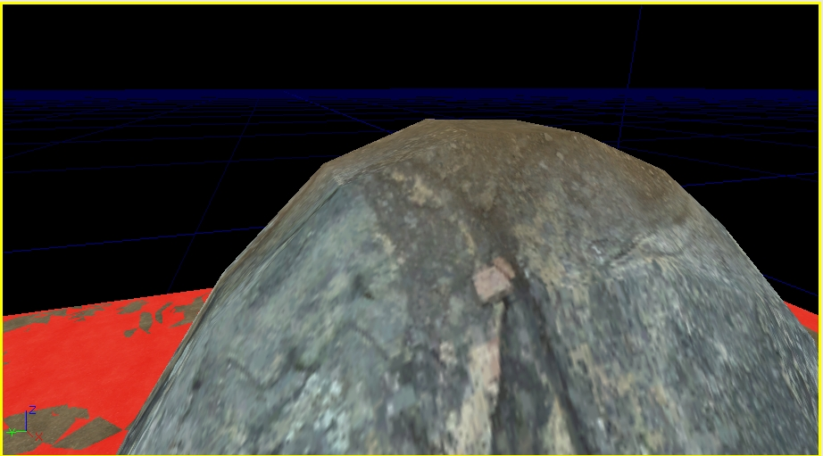

UDN
Search public documentation:
TerrainCollisionViewingCH
English Translation
日本語訳
한국어
Interested in the Unreal Engine?
Visit the Unreal Technology site.
Looking for jobs and company info?
Check out the Epic games site.
Questions about support via UDN?
Contact the UDN Staff
日本語訳
한국어
Interested in the Unreal Engine?
Visit the Unreal Technology site.
Looking for jobs and company info?
Check out the Epic games site.
Questions about support via UDN?
Contact the UDN Staff
地形碰撞网格物体
文档概要:本文档描述了地形碰撞视图模式，使您看到用于渲染的地形网格物体和用于碰撞的地形网格物体的不同。 文档变更记录:由Scott Sherman创建。概述
可以通过设置 Terrain Collision(地形碰撞) 显示标志来启用地形碰撞视图。这可以通过在编辑器视口中的‘显示标志’中选择那个标志来完成，或者通过在控制台窗口中输入show terraincollision 来完成。
当期用这个功能时，地形网格物体在碰撞多边形细分水平上将显示为红色的覆盖图，如下屏幕截图所示。

注意:当使用这个模式时，在很多地方都可能发生Z-冲突，并且您将在移动过程中看到闪光。由于我们的目的是显示真实碰撞Vs渲染网格物体的不同，所以这里将不会通过使用偏移来对这种现象进行修复。在这种情况下我们把闪光当作为一个好的标志 – 它意味着如果不是要求非常精确，那么您的碰撞网格物体和渲染网格物体是非常接近的。 为了查看出现在地形下面的碰撞网格物体，可以交换渲染方法。当切换了渲染方法后，地形本身将会渲染为红色的覆盖图而碰撞网格物体将会渲染为真实的地形材质。这可以通过在命令提示行或控制台中输入
togglecollisionoverlay 来完成。
以下屏幕截图显示了在默认模式下的一个山坡(碰撞描画为红色的覆盖层)：

碰撞平面明显地在山顶的下面，因此它没有被渲染。通过在命令行控制台中输入
togglecollisionoverlay ，它们两个将交换材质，出现如下所示的结果：

再次重复输入那个命令将会把覆盖图切换回碰撞网格物体。